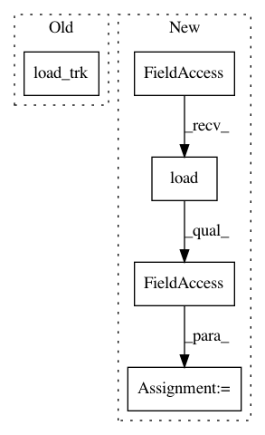

57d2b529fbf7c447d27d681a506ca43cfc94675d,pynets/registration/register.py,,direct_streamline_norm,#Any#Any#Any#Any#Any#Any#Any#Any#Any#Any#Any#Any#Any#Any#Any#Any#Any#Any#Any#Any#Any#Any#Any#Any#Any#Any#Any#,21
Before Change
// SyN FA->Template
[mapping, affine_map, warped_fa] = regutils.wm_syn(template_path, fa_path, dsn_dir)
[streamlines, _] = load_trk(streams)
// Warp streamlines
adjusted_affine = affine_map.affine.copy()
adjusted_affine[1][3] = -adjusted_affine[1][3]/vox_size**2
After Change
// SyN FA->Template
[mapping, affine_map, warped_fa] = regutils.wm_syn(template_path, fa_path, dsn_dir)
streamlines = nib.streamlines.load(streams).streamlines
// Warp streamlines
adjusted_affine = affine_map.affine.copy()
adjusted_affine[1][3] = -adjusted_affine[1][3]/vox_size**2
In pattern: SUPERPATTERN
Frequency: 3
Non-data size: 5
Instances
Project Name: dPys/PyNets
Commit Name: 57d2b529fbf7c447d27d681a506ca43cfc94675d
Time: 2019-09-15
Author: dpisner@utexas.edu
File Name: pynets/registration/register.py
Class Name:
Method Name: direct_streamline_norm
Project Name: dPys/PyNets
Commit Name: ec873c566b2f5eb23994243965c4f0acb8140456
Time: 2019-09-15
Author: dpisner@utexas.edu
File Name: tests/test_track.py
Class Name:
Method Name: test_save_streams
Project Name: dPys/PyNets
Commit Name: ec873c566b2f5eb23994243965c4f0acb8140456
Time: 2019-09-15
Author: dpisner@utexas.edu
File Name: tests/test_track.py
Class Name:
Method Name: test_create_density_map